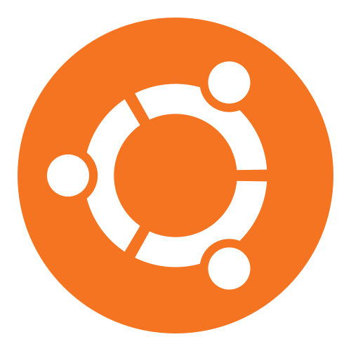

Operační systém je v informatice označení pro základní programové vybavení počítače (tj. software), které je zavedeno do paměti počítače při jeho startu a zůstává v činnosti až do jeho vypnutí.
Skládá se z jádra (kernel) a pomocných systémových nástrojů. Hlavním úkolem operačního systému je zajistit uživateli možnost ovládat počítač, vytvořit pro procesy aplikační rozhraní (API) a přidělovat jim systémové zdroje (procesor, paměť, přístup k souborům atd). Jeho vývoj je náročný na bezchybnost a efektivitu.
Nachází na mnoha zařízeních, která obsahují „počítač“ a provádějí různé úkoly najednou, například mobilní telefon, herní konzole, server.
Windows |
| Linux |
|---|---|---|
| |  |
Vytvořil Jakub Andrýsek a Jakub Voženílek